| Student 學生 | {{NAME}} ({{STUDENT_ID}}) |
| Date 日期 | November 2026 |
| Platform 平台 | Ubuntu 26.04 on WSL2 · gcc 15.2 · GNU Make 4.4 |
| Repository 原始碼 | github.com/GuavaCode233/client-server-application-in-c |
This project implements a TCP client–server system on Linux in C. The server waits for connections and creates one child process per client with fork(). Client and server exchange single-line text messages, and every line is encrypted with a Caesar cipher before it is sent. Code shared by both programs (network I/O, encryption and logging) is packaged as a dynamic shared library, libutil.so.
The project goals, taken from the course specification, are:
fork() only.libutil.so with -fPIC -shared and link both programs against it.Development followed nine stages (0–8). Each stage changed one thing, was compiled and tested in WSL, and was recorded in docs/dev-log/stage-N.md. This report summarises the design, the key implementation choices and the evidence collected.
| Stage | Content | Acceptance check |
|---|---|---|
| 0 | Directory layout, Makefile, empty libutil.so | make succeeds; ldd lists the library |
| 1 | Minimal iterative echo server and client | One line sent and echoed |
| 2 | send_all / recv_line and two-layer logging in the library | make vs. make DEBUG=1 differ; LOG_LEVEL works |
| 3 | fork() per client, without SIGCHLD handling | Two concurrent clients; zombies observed |
| 4 | SYSINFO, ECHO, QUIT | Replies are correct |
| 5 | Two-way Caesar encryption | Ciphertext on the wire; results correct on both ends |
| 6 | R1, R2, R3 behind the ROBUST macro | Three reproducible comparisons |
| 7 | Stress-test script, 10+ concurrent clients | Verified with ps, ss and the server log |
| 8 | Packet capture and report materials | Screenshots complete |
fork() 為每個 client 建立子行程，雙方以單行文字訊息溝通，每行皆經凱薩加密；共用的網路 I/O、加密與 log 函式編成 libutil.so。開發分為 0–8 九個階段，每階段只做一件事並實際編譯測試，紀錄於 docs/dev-log/。The parent process does only two things: accept() a connection and fork() a child to serve it. It never reads from or writes to a client, so a slow or idle client cannot block new connections. Each child owns exactly one connected socket, serves one client until QUIT or disconnection, and exits. Both programs load libutil.so at run time.
TCP is a byte stream with no message boundaries: one send() may arrive in several recv() calls, and two sends may arrive together. The protocol therefore defines its own framing: every message is one line terminated by \n, every reply is exactly one line, and a line may be at most MAX_LINE = 1024 bytes including the newline.
| Command (client → server) | Reply (server → client) |
|---|---|
SYSINFO | OK hostname=..;sysname=..;release=..;machine=..;uptime=..;totalram=..;freeram=..;procs=..;server_pid=..;child_pid=.. |
ECHO <text> | OK <text> |
QUIT | OK bye, then the server closes the connection |
| anything else | ERR unknown command |
\n belongs to the protocol layer.-DROBUST).accept() 與 fork()，不與 client 對話，因此單一 client 卡住不影響新連線；每個子行程只服務一個 client。TCP 沒有訊息邊界，所以協定規定「一行（以 \n 結尾）＝一則訊息」，回應固定單行、上限 1024 bytes。加密只作用於行的內容，密文落在 ASCII 32–126，不會產生 \n，不影響切行。pid_t pid = fork();
if (pid == 0) { /* child */
close(listenfd); /* the child never accepts */
handle_client(connfd, peer);
close(connfd);
exit(0); /* never fall back into the accept loop */
}
close(connfd); /* parent: the child owns this connection now */
fork() copies the process's file-descriptor table, not the sockets themselves, so after the fork both processes refer to the same kernel socket objects and each socket's reference count is 2. The kernel only sends FIN once a socket's reference count drops to zero, which makes both close() calls essential:
connfd, the connection never closes after the child exits (the client never sees EOF), and the parent leaks one descriptor per client until accept() fails with EMFILE.listenfd, every child holds the listening port; after the parent dies the port stays occupied and new servers cannot bind().Inspecting /proc/<pid>/fd during testing confirmed that the parent held only the listening socket (fd 3) and each child held only its connection (fd 4). The server PID is recorded before forking and inherited by each child through the copied memory. Calling getppid() in the child instead would return the init process if the parent had already died.
gcc -fPIC -shared -o lib/libutil.so lib/util.c -Iinclude gcc -o server/server_robust server/server.c -DROBUST -Llib -lutil -Wl,-rpath,'$ORIGIN/../lib'
-fPIC produces position-independent code, so the library works at whatever address it is mapped to, and -shared emits a shared object instead of an executable. The executable records only a NEEDED libutil.so entry; at start-up the dynamic linker (ld-linux) locates and maps the library. The RUNPATH of $ORIGIN/../lib, where $ORIGIN means "the directory of this executable", lets the programs find the library from any working directory and on any machine without setting LD_LIBRARY_PATH (Figure 4).
One pitfall: Ubuntu's gcc links with --as-needed by default, which drops a library the executable never calls. Even in stage 0 the "empty" library therefore exported one real function, so that ldd could show the dependency.
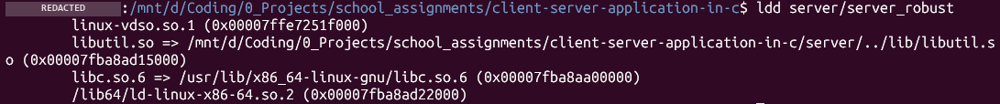
ldd server/server_robust resolves libutil.so through the rpath server/../lib.send() only guarantees that some bytes were copied into the kernel send buffer, so send_all() loops until every byte is sent and retries on EINTR. Reading is harder: reading one byte per recv() is correct but slow, while reading a large block may consume the beginning of the next line, which would then have to be kept in hidden per-descriptor state. recv_line() avoids both problems with MSG_PEEK:
\n in the peeked bytes.recv() exactly up to and including the newline. Anything after it stays in the kernel buffer for the next call.The function is therefore stateless and costs about two system calls per line. Its return value includes the \n, so an empty line (return value 1) can be told apart from an orderly close (return value 0). A test that sent hel / lo\nwor / ld\n\nlast\n in separate writes produced exactly four lines on the server, including the empty one.
#ifdef ENABLE_DEBUG /* compile-time switch: make DEBUG=1 */ #define LOG_D(...) log_write(LOG_DEBUG, __FILE__, __LINE__, __VA_ARGS__) #else #define LOG_D(...) ((void)0) /* the call and its strings vanish */ #endif /* run-time switch: if (level > g_log_level) return; set by LOG_LEVEL or -v */
Without DEBUG=1, the preprocessor removes every LOG_D call before compilation, so neither the code nor its format strings exist in the binary (strings finds 0 matches, and 1 after make DEBUG=1, Figure 6). Even in a debug build, messages appear only when the run-time level is 2. Each line has the format [time][level][pid][file:line], and the PID is essential when many children log at once. Each line is written with a single write(2), so lines from concurrent processes never interleave. The Makefile also stores the current CFLAGS in a .cflags file, so toggling DEBUG triggers a rebuild even when no source file has changed.
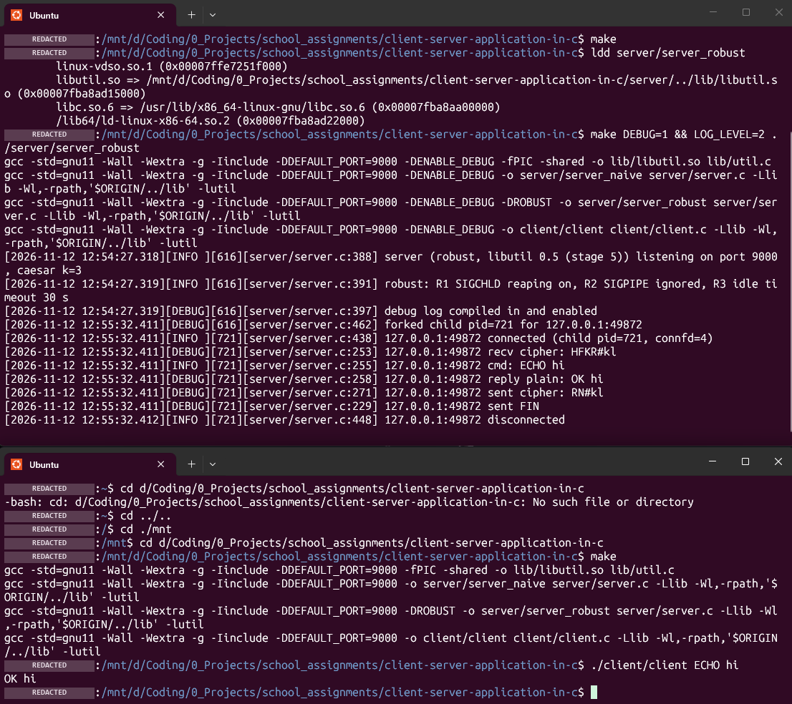
LOG_LEVEL=2: the server log shows the ciphertext received (HFKR#kl), the decrypted command, the plaintext reply and the ciphertext sent (RN#kl), each tagged with the child PID (721).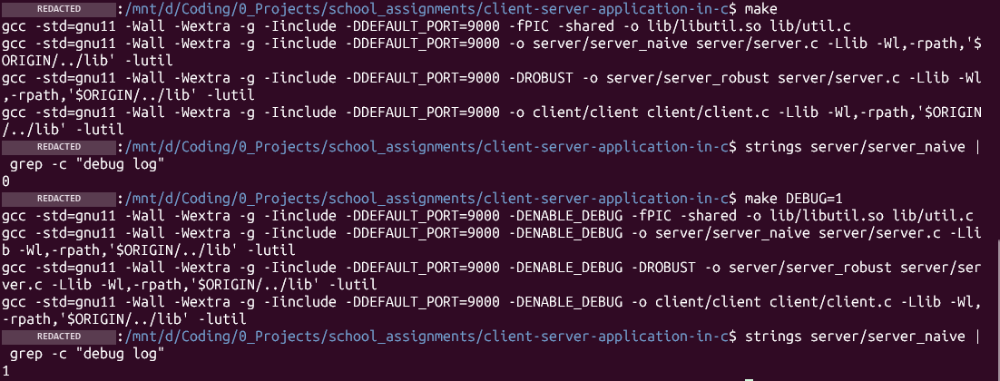
make and once after make DEBUG=1.encrypt: c' = 32 + ((c - 32 + k) mod 95) decrypt: c = 32 + ((c' - 32 - k + 95) mod 95) unsigned char c = (unsigned char)*s; /* UTF-8 bytes are negative as signed char */ if (c < 32 || c > 126) continue; /* \n, \r and UTF-8 are left untouched */ *s = (char)(32 + (c - 32 + shift) % 95); /* shift already normalised to 0..94 */
The cipher shifts all 95 printable ASCII characters, including spaces and punctuation, so the structure of key=value; replies is less obvious than with a letters-only cipher. Two C pitfalls are handled explicitly:
% operator keeps the sign of the dividend (-1 % 95 == -1). The key is therefore normalised with ((k % 95) + 95) % 95, and decryption is implemented as a forward shift of 95 − k.char is signed on x86, so every byte is cast to unsigned char before the range check.A unit test covering keys −200 to 200 confirmed, for every key, that the ciphertext stays in range (so it never produces \n), that the mapping is one-to-one and that decryption restores the input.
connfd、子行程要關 listenfd，否則連線無法關閉或 port 被佔用。libutil.so 以 -fPIC -shared 編譯、以 rpath $ORIGIN/../lib 載入。recv_line 用 MSG_PEEK 只取到 \n 為止，不需保存狀態。log 分編譯期（#ifdef 直接移除程式碼）與執行期（LOG_LEVEL）兩層。凱薩加密處理負數取模與 signed char 兩個陷阱，並以 401 個金鑰的單元測試驗證。scripts/stress.sh starts 12 clients at once. Each client sends SYSINFO, prints the reply, and keeps the connection open for 15 seconds (--hold 15), which leaves a window in which all connections exist at the same time. The script then collects four independent kinds of evidence and checks them automatically.
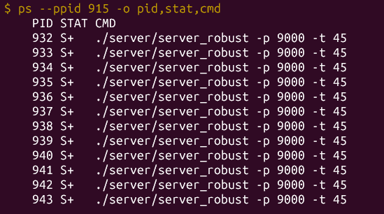
ps --ppid: 12 child processes of server 915.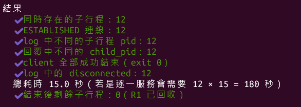
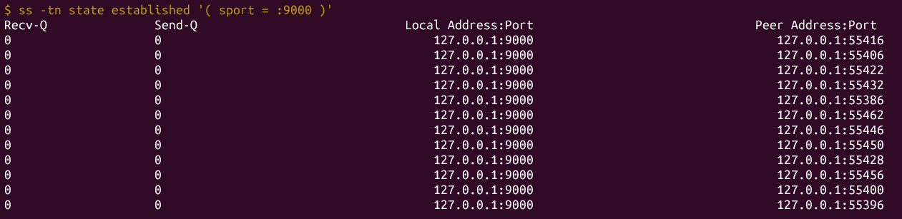
ss -tn state established: 12 established connections to port 9000, each from a different ephemeral port.| Evidence | Source | Result |
|---|---|---|
| Child processes alive at the same time | ps --ppid | 12 |
| ESTABLISHED connections | ss -tn | 12 |
| Distinct child PIDs in the server log | server log | 12 |
Distinct child_pid values in the replies (same server_pid) | client output | 12 |
| Total elapsed time | script timer | 15.0 s (vs. 180 s if served one by one) |
| Children left after all clients exit (robust) | ps | 0 |
The same test with 50 clients also passed in 3 seconds, even though the listen() backlog is only 16. The backlog limits connections that have completed the handshake but have not yet been accepted, not the number of clients served at once. Because the parent accepts and forks within microseconds, the queue never fills.
ps 看到 12 個子行程、ss 看到 12 條連線、log 與回覆中各有 12 個不同的子行程 pid，總耗時 15.0 秒（逐一服務需 180 秒）。加測 50 個 client 亦通過：backlog 16 限制的是「尚未被 accept 的連線」，不是同時服務數。The same server.c is compiled twice. server_robust adds -DROBUST, and the robustness code is wrapped in #ifdef ROBUST, so the naive binary does not contain it at all (verified with nm). The two variants differ only in the mechanism under test, which keeps the comparison controlled. scripts/demo_robust.sh reproduces all three cases.
| Problem | naive | robust | |
|---|---|---|---|
| R1 | Zombie processes | 5 × <defunct> after 5 clients | 0: SIGCHLD handler reaps all |
| R2 | Writing to a reset connection | Child killed by SIGPIPE (exit code 13), no log | EPIPE logged; clean exit |
| R3 | Idle client | Child blocked in recv() forever | Closed after the timeout (-t 3) |
When a child exits, the kernel keeps its PID and exit status until the parent collects them with wait(). The naive parent never waits, so every finished child remains as a zombie that holds a PID slot. Once enough zombies accumulate, fork() fails with EAGAIN.
static void sigchld_handler(int signo) {
int saved_errno = errno; /* waitpid may overwrite errno */
while (waitpid(-1, NULL, WNOHANG) > 0) ; /* reap ALL finished children */
errno = saved_errno;
}
sa.sa_flags = SA_RESTART | SA_NOCLDSTOP; /* restart the interrupted accept() */
The handler must loop because standard signals are not queued. If several children exit while the handler is running, only one pending SIGCHLD is recorded. WNOHANG keeps the handler from blocking, and saving errno protects the code that was interrupted. The handler does not log, because the logging code uses functions such as snprintf that are not async-signal-safe. A test in which 15 clients disconnected at the same instant left 0 zombies.
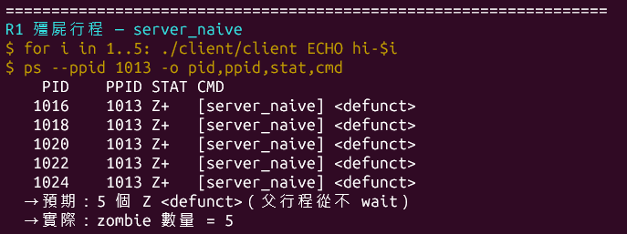
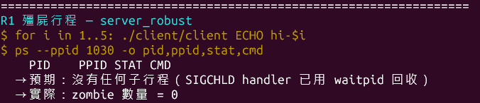
Writing to a connection that the peer has already reset raises SIGPIPE, whose default action is to terminate the process. The demo client writes five commands in a single write and closes immediately without reading:
The naive child dies inside send(): the log stops abruptly with no error and no "disconnected" line. Reading the zombie's exit status from /proc/<pid>/stat gives 13, which is SIGPIPE. The robust server sets SIGPIPE to SIG_IGN (the setting is inherited by every child), so the same send() returns −1 with errno = EPIPE and the child logs the event and exits normally. The demonstration reproduced this in 10 out of 10 runs.
Design note: send_all() deliberately does not use MSG_NOSIGNAL. The library is shared by both builds, so protecting it there would also protect the naive build and make the comparison impossible.
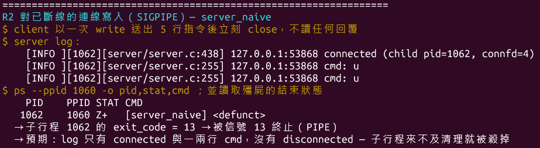
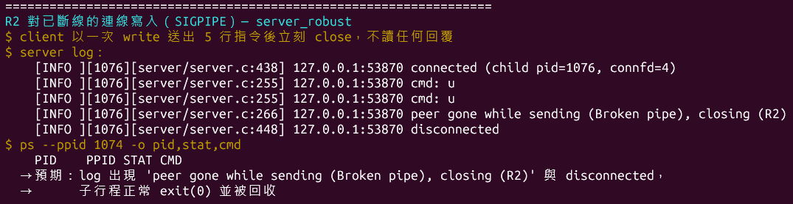
A client that connects and never sends anything keeps its child blocked in recv() forever. With many such connections an attacker can exhaust the server's processes, which is the idea behind Slowloris-style attacks. The robust child sets SO_RCVTIMEO on its connection; recv() then returns −1 with EAGAIN after the configured idle time, and the child closes the connection. The timeout applies to each recv() call rather than to the whole session, so a client that sent a command every 1.5 s under -t 2 was never disconnected.
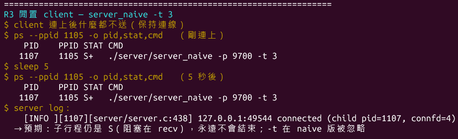
S+) 5 s later and never ends; -t is ignored.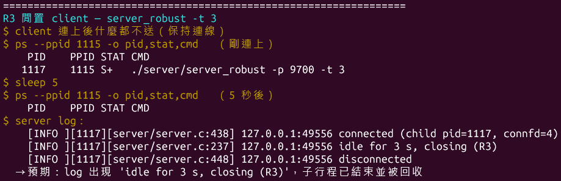
Also present in both builds (not part of the comparison): SO_REUSEADDR so the server can restart while old connections are in TIME_WAIT (R5), and EINTR retries in accept, recv_line and send_all (R6). SA_RESTART alone is not sufficient, because socket calls with a timeout are never restarted automatically.
-DROBUST 編出兩版。R1：SIGCHLD handler 以迴圈 waitpid(WNOHANG) 回收，因為標準信號不排隊；naive 版留下 5 個殭屍，robust 版為 0。R2：client 先送 FIN，server 第一次寫入引發 RST，第二次寫入觸發 SIGPIPE；naive 子行程被信號 13 殺死且無 log，robust 版忽略 SIGPIPE、收到 EPIPE 後正常結束（10/10 次重現）。R3：SO_RCVTIMEO 讓閒置連線在逾時後被關閉，naive 版則永久阻塞。scripts/capture.sh records three scenarios with tcpdump: encrypted traffic (k = 3), plaintext traffic (k = 0) for comparison, and a FIN-versus-RST teardown. Capturing normally requires root (CAP_NET_RAW). The script instead runs the server, the clients and tcpdump inside an unprivileged user + network namespace (unshare -rn), where the user acts as root for that private loopback only. No privileges are raised, and no other traffic is captured. A private UTS namespace is also used to replace the machine's hostname with the label REDACTED-HOSTNAME, so the published captures contain no real hostname while the packets themselves are unmodified.
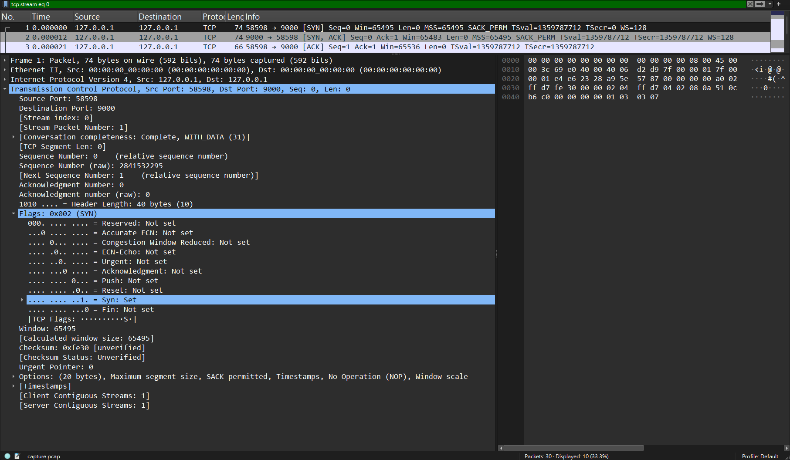
The handshake is completed by the kernel as soon as the socket is in the listening state, before accept() returns. A stage-1 experiment showed this directly. While the iterative server was busy with another client, a second client's connect() succeeded and its data waited in the kernel buffer. The server read that data later, even though the client had already been killed.
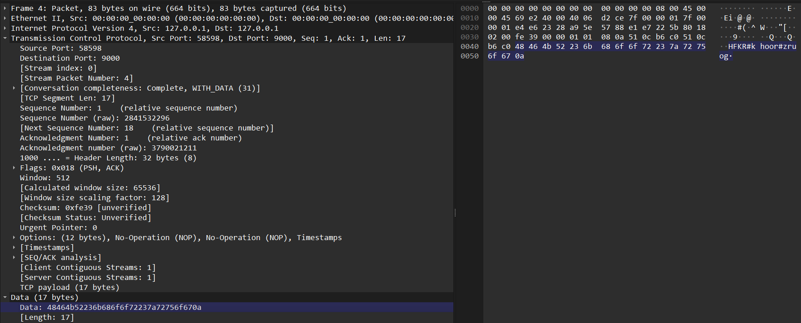
HFKR#khoor#zruog\n, the ciphertext of ECHO hello world.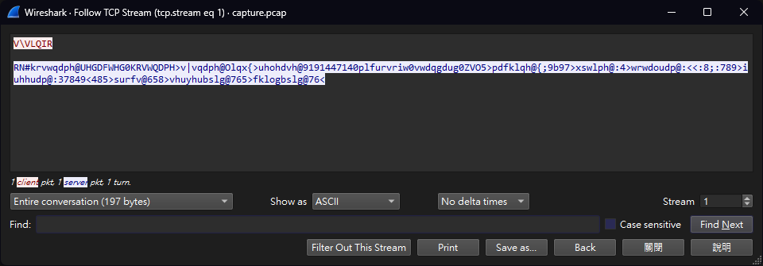
V\VLQIR (SYSINFO) and an unreadable reply.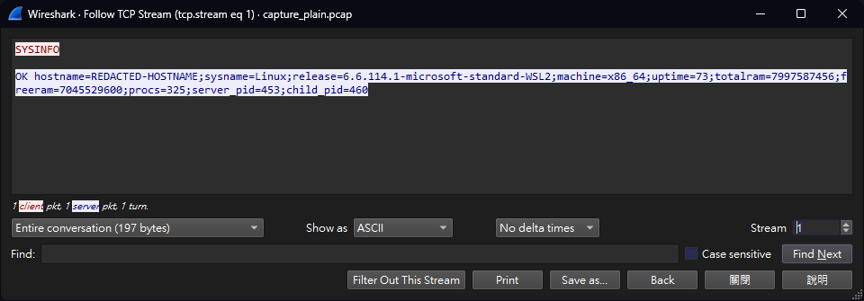
Although Figure 18 looks unreadable, its structure leaks. Every reply starts with RN#, and @ and > alternate regularly, revealing the pattern key=value;. Section 7 shows how this breaks the cipher.
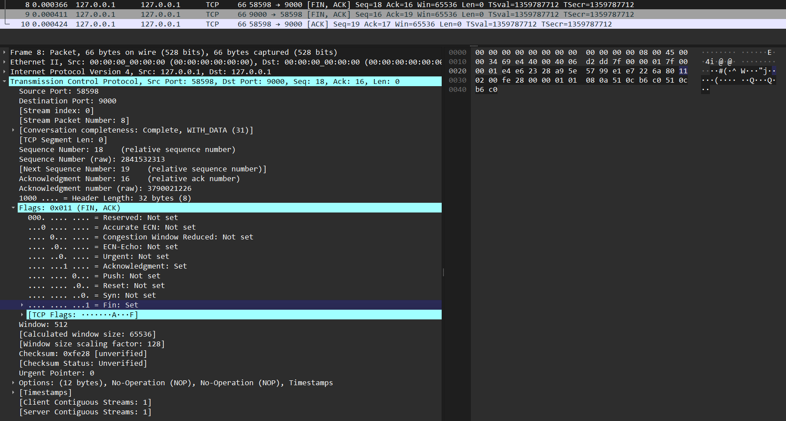
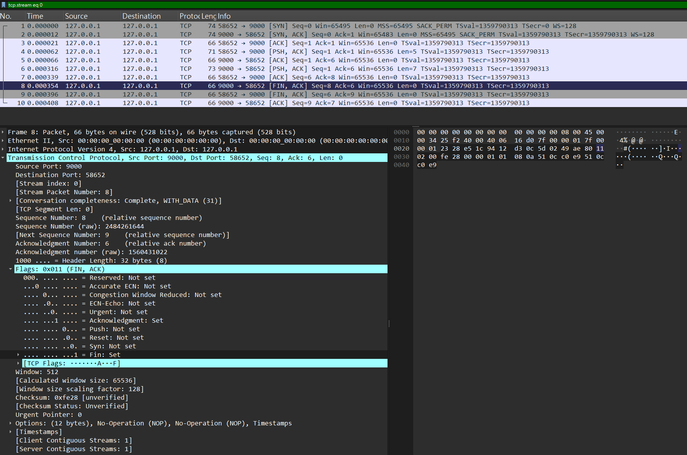
QUIT (stream 0 of capture_rst.pcap): here the server closes first with FIN (packet 8), so TIME_WAIT is on the server side, which is why the server sets SO_REUSEADDR.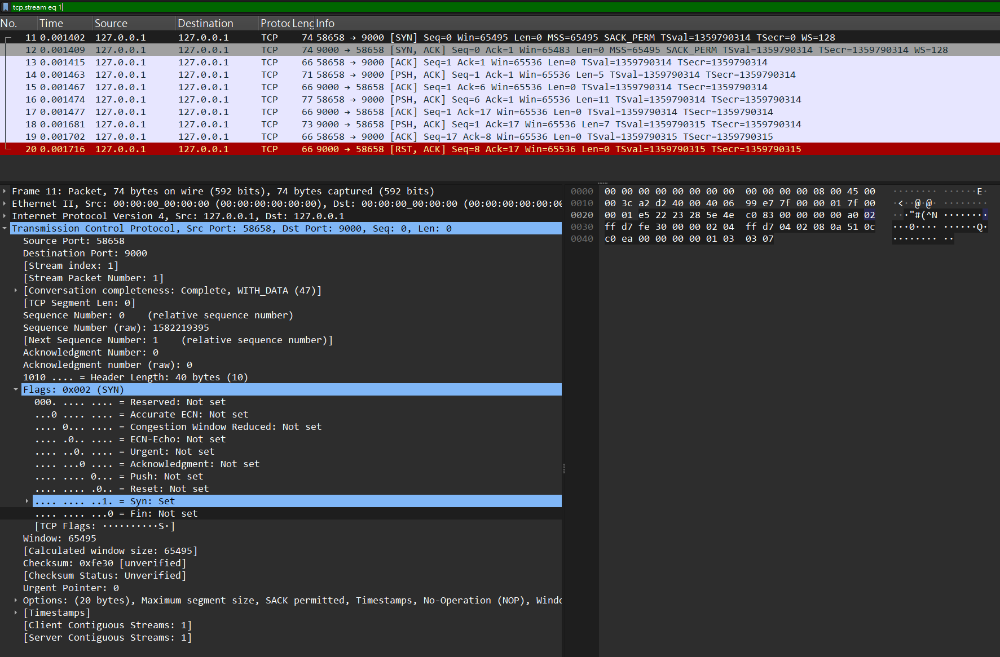
QUIT followed by one more line (packet 16, Len = 11) that the server never reads: it closes with RST (packet 20, red row).Linux sends RST instead of FIN when a socket is closed while unread data remains in its receive buffer (RFC 1122 §4.2.2.13). The RST tells the peer that some of its data was discarded. This is the mirror image of R2, in which the client closed with pending data and the server's later write raised SIGPIPE.
listen 後完成；加密版 payload 為 HFKR#khoor#zruog，明文版則直接外洩指令與系統資訊；但密文仍洩漏結構（RN# 開頭、@／> 交替）。正常斷線為 FIN，關閉時若接收緩衝區仍有未讀資料則送 RST。The Caesar cipher in this project is a demonstration that "encrypted traffic is unreadable on the wire". It is not a security mechanism:
| Weakness | Explanation | Concrete example in this project |
|---|---|---|
| Tiny key space | Only 95 keys, one of which (k = 0) is plaintext | Trying k = 1…94 on HFKR#khoor reveals ECHO hello at k = 3 |
| Known plaintext | A single plaintext–ciphertext pair reveals the key | Every reply starts with OK ; ciphertext RN# gives 'R' − 'O' = 3 |
| Frequency analysis | Each character always maps to the same character | The most common symbol # is likely the space, and '#' − ' ' = 3 |
| Structure leakage | Length and repeated patterns are preserved | @ and > expose the key=value; layout of SYSINFO |
| No integrity | Modified ciphertext goes undetected | A man-in-the-middle can alter commands character by character |
| No key exchange | Both sides must agree on k in advance | -k is typed manually on both sides |
| Partial coverage | Bytes outside 32–126 are not encrypted | Chinese (UTF-8) text in ECHO crosses the network in plaintext |
Even the published captures show this. Without redaction, the encrypted hostname in Figure 18 could have been recovered by simply shifting it back by 3. A real system should use TLS: an ephemeral key exchange such as ECDHE agrees on a fresh key over an insecure network, an authenticated cipher such as AES-GCM or ChaCha20-Poly1305 provides both confidentiality and integrity, and certificates authenticate the server.
Other security-relevant choices in the implementation:
recv_line rejects lines over 1024 bytes (EMSGSIZE), so oversized input cannot overflow a buffer.OK 開頭）立即算出 k=3、保留字元頻率與結構、沒有完整性保護、無法安全交換金鑰，且 UTF-8 中文不會被加密。實務應使用 TLS（ECDHE 金鑰交換、AES-GCM 等認證加密、憑證驗證身分）。Every stage was compiled with -Wall -Wextra and produced no warnings in either build. Every stage was also tested before it was committed.
| Area | Tests | Result |
|---|---|---|
| Build & linking | make, make DEBUG=1, ldd, readelf RUNPATH, rebuild on flag change | pass |
| Framing | Fragmented writes, two lines in one write, empty line, 1100-byte line without \n, CRLF input | pass |
| Logging | Levels 0/1/2, -v overrides LOG_LEVEL, invalid level, debug code absent from release build | pass |
| Commands | All 10 SYSINFO fields compared with hostname, uname, /proc/uptime, free -b; ECHO with spaces, symbols and UTF-8; unknown commands; several commands on one connection | pass |
| Cipher | Unit test for keys −200…200 (range, one-to-one mapping, round trip); key mismatch; k = 0 and k = 94; bytes on the wire captured with nc | pass |
| Concurrency | 12 × 15 s and 50 × 3 s stress tests; 15 simultaneous disconnects | pass |
| Robustness | R1, R2 (10/10 runs), R3; active client not affected by the timeout; -t 0 | pass |
| Error handling | No server running, invalid IP address, invalid port/key/hold values, ECHO -5 (an argument starting with a dash) | pass |
make DEBUG=1 did nothing after a normal make. make compares only file timestamps. Fixed with a .cflags stamp file that changes whenever the flags change.ECONNRESET instead of SIGPIPE. The bash client wrote the commands in many small writes, so it still had unread replies in its buffer when it closed and sent RST immediately. Writing all commands at once made the client send FIN first, which reproduces SIGPIPE every time../client ECHO -5 failed. GNU getopt reorders arguments and treated -5 as an option. Fixed with a leading + in the option string, which stops option parsing at the first command word.-Wall -Wextra 編譯皆無警告，並涵蓋建置、切行、log、指令、加密、併發、強健性與錯誤處理等測試，全部通過。開發中解決的問題包括：make 只看時間戳記（以 .cflags 解決）、R2 示範因多次寫入導致 RST（改為一次寫入）、封包擷取為空（等待時機不可靠）、getopt 重排參數（加上 +）。The project delivers a fork-based TCP server that served 12 (and 50) clients concurrently, a shared library loaded through rpath, a newline-framed protocol with two-way Caesar encryption, two-layer logging, and three robustness mechanisms. Each mechanism was demonstrated against a naive build compiled from the same source. Packet captures confirm the TCP handshake, the encrypted payloads, the plaintext leak when encryption is disabled, and the difference between FIN and RST teardown.
The main lessons concern how much of network programming is decided by the kernel rather than by the application:
accept() returns.Each robustness problem was invisible during normal operation and appeared only under specific timing. This is why each one was reproduced deliberately rather than assumed to be handled.
accept 前完成、TCP 無訊息邊界、最後一個 fd 關閉才真正斷線、信號不排隊、未讀資料使 FIN 變成 RST。This project was developed with the assistance of Claude (Anthropic), used through Claude Code.
本專案在開發過程中使用了 Anthropic 的 Claude（透過 Claude Code）協助。
libutil.so, the server with its robustness mechanisms, the client and the Makefile.libutil.so、server（含強健性機制）、client 與 Makefile。stress.sh, demo_robust.sh and capture.sh.fork() and file descriptors, signals and zombie processes, shared libraries, conditional compilation, packet analysis, and why the Caesar cipher is insecure.fork() 與檔案描述符、信號與殭屍行程、動態函式庫、條件編譯、封包分析，以及凱薩加密為何不安全。git clone https://github.com/GuavaCode233/client-server-application-in-c.git cd client-server-application-in-c && make ./scripts/stress.sh 12 15 # concurrency evidence (Section 4) ./scripts/demo_robust.sh all # R1-R3 comparison (Section 5) ./scripts/capture.sh # packet captures in docs/capture/ (Section 6)